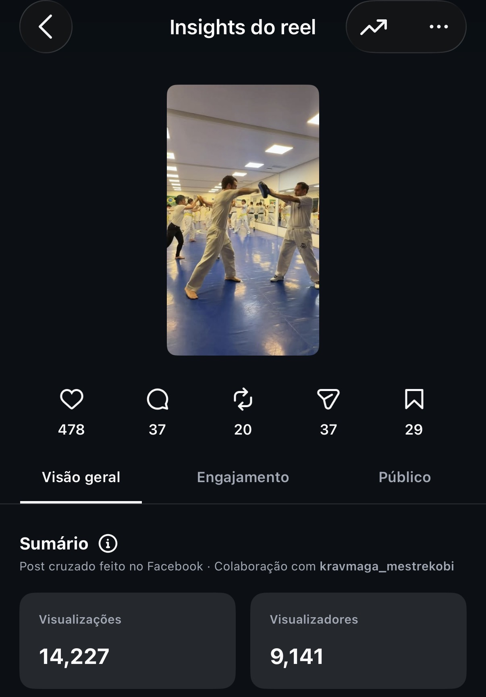
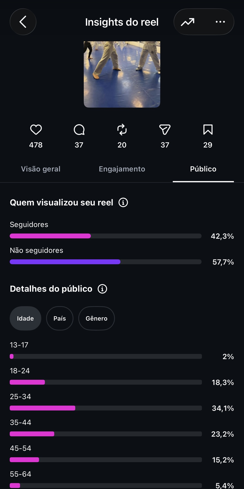

Acesso restrito
Digite o código de acesso que você recebeu para ver este relatório.
MR90 Krav Maga
Resultados da publicação nas duas plataformas, lado a lado: alcance, engajamento e público de quem assistiu no Instagram e no TikTok.
Bloco 1 de 2
Instagram · ReelsO conteúdo circulou bem além da base de seguidores e gerou um volume de salvamentos e compartilhamentos acima do normal — sinal de que a comunidade quis guardar e repassar o material.
Alcance
Comunidade
Alcance
Seguidores x Não-seguidores
Gênero
Faixa etária
Comprovante


Post cruzado no Facebook, em colaboração com @kravmaga_mestrekobi.
Resultado
No Instagram, o conteúdo alcançou 9.141 contas e chegou a 14.226 visualizações, com 58% do público formado por quem ainda não seguia o perfil — alcance genuinamente novo para a marca. O destaque fica por conta dos 29 salvamentos e 37 compartilhamentos: mais do que curtir, parte da audiência quis guardar o conteúdo pra ver depois ou mostrar pra alguém, um sinal de interesse real no método, não só um like rápido.
Bloco 2 de 2
TikTokPrimeiro teste da marca na plataforma — alcance ainda pequeno perto do Instagram, mas já traz sinais de audiência nova e de um público mais jovem.
Alcance e Engajamento
Alcance
Seguidores x Não-seguidores
Gênero
Faixa etária
Maioria do público concentrada no Brasil.
Resultado
No TikTok o engajamento ainda foi tímido — 1.284 visualizações e 33 curtidas, sem comentários ou compartilhamentos dessa vez. É um resultado esperado para um primeiro teste de formato numa plataforma nova: mesmo assim, 53% do público já era gente nova, fora da base de seguidores, e quase metade (44%) está exatamente na faixa de 25 a 34 anos — o público-alvo da marca. Serve como ponto de partida pra calibrar o conteúdo e insistir no formato nos próximos vídeos.